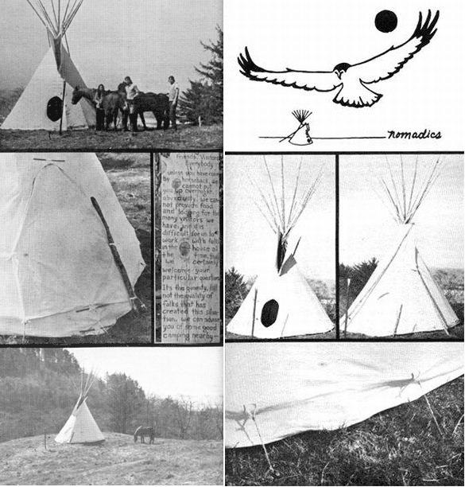

Along about March of last year some folks name of Thommy, Annie and Jeb bought a particular tipi (because the Whole Earth Catalog said it was the best readymade one available) and set out to do some serious tipi dwelling. Six months of continuous living in that tent later, those three folks were-to put it mildly-more than somewhat discouraged. The grommets were ripping out, some seams had come unraveled and the whole miserable structure was proving less than optimum for the rains, snows and zero degree weather of Oregon's coastal winter. The tipi-built to the traditional Sioux pattern-was a thing of beauty, but it certainly wasn't hacking it as a year-round living quarters.
At that point, luckily, a little old sailmaker chanced to pass by the tent. He sat for awhile and then he said, "This beautiful dwelling could be made better, much better. My lifestyle could be made better, much better. Together, we can improve both."
So Thommy and Annie and Jeb adopted Cliff Cox and combined their first-hand knowledge of tipi living with his 34 years of canvas-working experience. And the results have been very good indeed.
Nomadics, as the tribe decided to call itself, now produces undoubtedly the finest manufactured tipi available. They use only the best materials (double fill canvas, Permasol and Acrilon double-sewed with Dacron thread in a sailmaker's lock stitch that positively won't unravel. They reinforce every possible stress point on the surface of their design's cover and liner. The peg loops they put on the Nomadics tipis are about five times as strong as the grommets used on other makes and the tribe "button hole" stitches every pinning hole up the front of their tents instead of using the faster, cheaper (and weaker) grommets there.
The Nomadics gang retained the exquisitely lovely basic Sioux tipi pattern, but they added the longer and more efficient Cheyenne smoke flap extensions and redesigned the tent liner to provide increased insulation and warmth. They also came up with a much better door flap and countless other small but noteable improvements that only folks who actually live in a tipi would think of.
Now, as unbelievable as this may sound, the Nomadics tribe has done all this (and remember, the material they use costs 6-8 times as much as the fabric used by any other tipi maker), while holding the cost of their finished tents down to almost exactly the same prices of those "other brands." How? Well, Thommy says, "All established profit margins would seem to discount this combination of relationship betwixt cost of materials and retail price, but what those bookkeeping dudes always assume is a certain lifestyle, one of very expensive habits, none of which we are addicted to, we hope. We buy our foods at the wonderful Portland Co-op (Food `n Friends) and get the old buggie doctored at the People's Garage. The secret is alternative lifestyle access and habits. We revere living in the forest in a tipi. It's not camping out for us, it's permanent. We think that coming at it from the inside-out allows us to make a finer tipi in this country (by non-Indians) for less exchange (we like to trade) than any of those manufactured as a sideline by a tent and awning company."
Following this LIVE-your-life-style philosophy enables Nomadics to sell a 16-foot tipi made of 8-oz. double-fill canvas for only $85 and an 8-oz. Acrilon tipi of the same size retails for just $140. A 6-foot high liner of doublefill canvas for that tipi is $35 and the same liner in 10-oz. Permasol runs $42. The prices, respectively, for a 22-foot structure are $115, $220, $50 and $57. Dang inexpensive, anyway you consider it.
Look, it would take half this issue to tell you all the good things we know about the Nomadics tipi. Let's just say that several people here at Mother Earth News intend to buy tipis soon, and those tipis are gonna be made by Nomadics, and let it go at that. For full, complete, warm and wonderful details on why we think the Nomadics design is currently the best in the world, contact:
Nomadics Tipi Makers
17671 Snow Creek Rd.
Bend, Oregon 97701
Tele: (541) 389-3980
Those folks are really into tipis and they can tell you all about it better than we can anyway.
|
 |
|
|